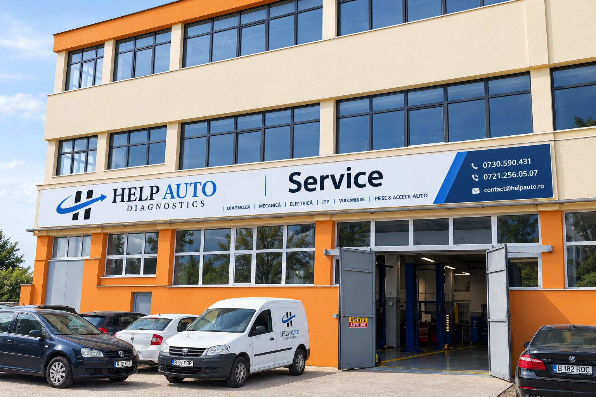

Dincolo de diagnoză, credem că oamenii au nevoie de ajutor
Help Auto Diagnostics a apărut dintr-o observație simplă: atunci când mașina se strică, problema nu este doar una tehnică.
Uneori înseamnă întârzierea la serviciu. Alteori înseamnă un drum ratat către medic, anularea unor planuri importante sau mult stres într-un moment în care ai avea nevoie, mai degrabă, de soluții clare și de cineva care să te ghideze.
De aceea am construit Help Auto Diagnostics: un serviciu mobil care aduce expertiza mai aproape de oameni și care încearcă să ofere nu doar un diagnostic corect, ci și continuitate în mobilitate.
Nu promitem că suntem cei mai rapizi sau cei mai ieftini. Ne propunem să fim cei pe care te poți baza cu adevărat, atunci când ai nevoie de ajutor.

Peste 20 de ani de experiență în service auto
În spatele Help Auto Diagnostics se află Ciprian Burducea, inginer mecanic cu peste 20 de ani de experiență în domeniul auto.
De-a lungul anilor, a coordonat sute de reparații și a întâlnit aproape toate situațiile cu care se poate confrunta un șofer: de la erori electronice aparent banale până la intervenții complexe sau cazuri în care oamenii aveau nevoie de mai mult decât o simplă reparație.
În jurul experienței sale s-au format o echipă de specialiști și o rețea de parteneri care împărtășesc cu toții aceeași convingere: atunci când o mașină se oprește, oamenii au nevoie de mai mult decât o diagnoză. Au nevoie de soluții clare și de sprijin real.
O echipă și o rețea de parteneri pe care te poți baza
Help Auto Diagnostics funcționează cu sprijinul unei echipe tehnice și al unor parteneri de încredere, selectați astfel încât să putem oferi soluții complete și adaptate fiecărei situații.
Atunci când este nevoie, colaborăm pentru transport auto, reparații complexe, gestionarea daunelor sau asigurarea unei soluții de mobilitate, astfel încât clientul să nu fie nevoit să coordoneze singur întregul proces.
Ne dorim ca fiecare intervenție să însemne mai puțin stres și mai multă claritate pentru cei care apelează la noi.
Echipamente profesionale
Un diagnostic corect începe cu instrumentele potrivite.
Folosim echipamente profesionale dedicate pentru identificarea precisă a problemelor și pentru evitarea înlocuirii inutile a componentelor.
Printre acestea se numără:
- echipamente specifice activităților desfășurate în service.
Pentru noi, tehnologia nu înlocuiește experiența. O completează.
Cum lucrăm
Calm
Nu panicăm clientul cu mesaje agresive.
Clar
Explicăm simplu ce problemă a apărut și ce variante există.
Empatic
Înțelegem că pentru mulți oameni o mașină stricată înseamnă stres real.
Profesionist
Nu promitem imposibilul și nu folosim limbaj exagerat.
Apropiat
Vorbim ca un om normal, profesionist, dar nu ca un manual tehnic.
Partenerii care susțin Help Auto Diagnostics
Pentru a oferi soluții complete, colaborăm cu parteneri de încredere care ne ajută să gestionăm întregul proces, de la diagnosticare până la repunerea mașinii clientului în mișcare.

New Paint Garage
Atunci când situația o impune, intervențiile începute prin Help Auto Diagnostics pot continua în cadrul New Paint Garage.
Aici sunt realizate servicii precum:
- mecanică auto;
- tinichigerie;
- vopsitorie;
- diagnoză;
- gestionarea dosarelor de daună.
Această colaborare ne permite să oferim clienților un parcurs coerent, fără drumuri suplimentare și fără nevoia de a căuta singuri alte soluții.
Parteneri pentru transport auto
Atunci când mașina nu mai poate fi deplasată în siguranță, apelăm la parteneri specializați în transport pe platformă.
Coordonăm întregul proces astfel încât clientul să nu fie nevoit să gestioneze mai mulți furnizori în paralel.
Parteneri din comunitate
Credem că un business sănătos trebuie să aibă și un rol social.
De aceea colaborăm cu parohii, ONG-uri și alte organizații locale pentru identificarea unor cazuri în care sprijinul nostru poate face diferența.
Prin proiectele pro bono, încercăm să oferim ajutor acolo unde mobilitatea aduce posibilitatea de a merge mai departe într-o perioadă dificilă.